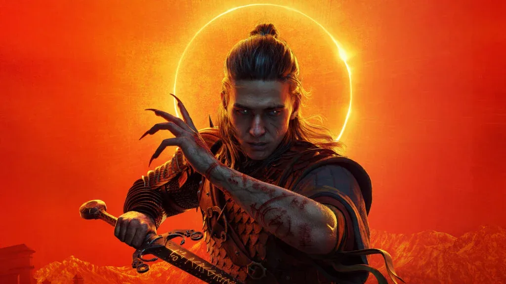

Luiso · 9 de septiembre de 2026 · 3 min de lectura
Rebel Wolves no parece tener intención de esperar demasiado para continuar con The Blood of Dawnwalker. El estudio polaco ya está buscando un guionista principal para comenzar a trabajar en la próxima entrega de la saga, apenas unos días después del lanzamiento del primer juego.
La búsqueda fue revelada por Jakub Szamałek, director narrativo y actual Lead Writer de The Blood of Dawnwalker. A través de una publicación, el creativo anunció que está buscando a un nuevo Lead Writer que lo acompañe en la creación del próximo capítulo de la historia.
La publicación deja claro que el proyecto no se encuentra simplemente en una etapa de planificación abstracta. El concepto de la secuela ya está tomando forma y Rebel Wolves comenzó a incorporar personal para trabajar en ella, aunque todavía no se conocen detalles concretos sobre su argumento, protagonistas o fecha de lanzamiento.
La decisión de avanzar rápidamente con una continuación llega después de un lanzamiento especialmente exitoso para el debut de Rebel Wolves.
The Blood of Dawnwalker llegó al mercado el 3 de septiembre de 2026 para PC, PlayStation 5 y Xbox Series X|S. El RPG de acción está ambientado en una versión ficticia de la Europa medieval y combina elementos de fantasía oscura, vampiros y una estructura narrativa que permite tomar decisiones capaces de modificar el desarrollo de la aventura.
Según los reportes publicados después de su lanzamiento, el juego superó el millón de copias vendidas durante sus primeros tres días. El resultado parece haber sido suficiente para que Rebel Wolves acelere sus planes para convertir la propiedad intelectual en una franquicia.
El estudio ya había definido a The Blood of Dawnwalker como el primer capítulo de una saga, por lo que la existencia de una continuación no resulta completamente inesperada. La diferencia es que ahora hay indicios concretos de que el trabajo narrativo para el siguiente juego ya comenzó.
Por el momento, Rebel Wolves no reveló ningún detalle sobre la historia de la próxima entrega.
El primer juego sigue a Coen, un joven que se convierte en un Dawnwalker, una criatura situada entre el mundo humano y el vampírico. La aventura transcurre en Vale Sangora, un territorio dominado por el vampiro Brencis, y plantea una estructura en la que el jugador dispone de 30 días y 30 noches para intentar salvar a su familia.
La forma en que termina la historia y las distintas decisiones tomadas durante la campaña podrían ofrecer numerosas posibilidades para una continuación, pero el estudio todavía no confirmó si la secuela continuará directamente la historia de Coen o presentará nuevos personajes y conflictos dentro del mismo universo.
Por ahora, el único dato concreto es que Rebel Wolves ya está buscando a la persona que ayudará a construir narrativamente ese próximo capítulo. Y considerando que The Blood of Dawnwalker acaba de llegar al mercado, todavía podrían pasar varios años antes de que veamos oficialmente la secuela.